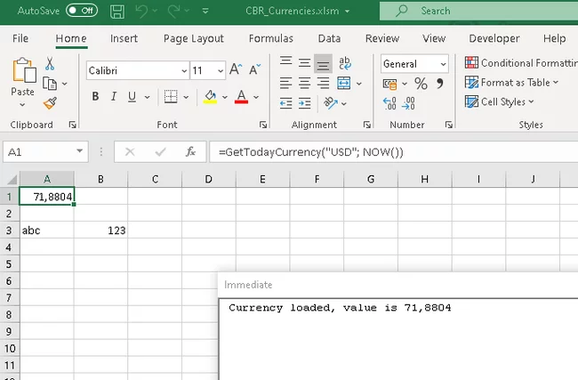
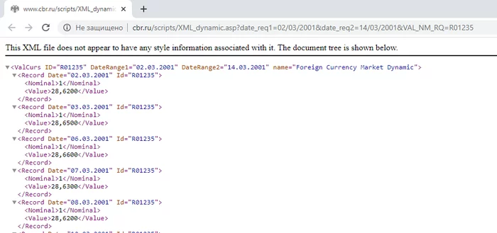
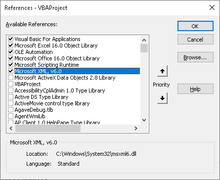
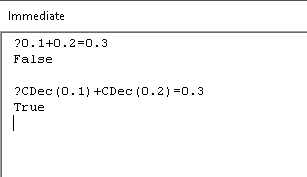
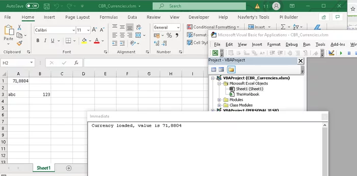

Currency rates from the Bank of Russia website in VBA
How to load exchange rates from the Bank of Russia (CBR) XML API into Excel with VBA and a user-defined function that refreshes automatically.
A common request from Excel users is a macro that loads exchange rates from the Bank of Russia (CBR) website, with formulas that refresh themselves and pick up the current rate for today. A ready-made solution is available on GitHub: https://github.com/navferty/CBR-VBA-Currencies. Below is how it is built, step by step.

The Bank of Russia API
The CBR website has an official API that returns the dynamics of exchange rates (handy if you need a rate for a specific date in the past). It is an HTTP GET request like this:
http://www.cbr.ru/scripts/XML_dynamic.asp?date_req1=02/03/2001&date_req2=14/03/2001&VAL_NM_RQ=R01235Here R01235 is the currency code (US dollar). The list of currency codes for the request is also published on the CBR website.
The API returns XML. For VBA that is actually easier than JSON, since XML is supported out of the box while parsing JSON needs third-party libraries. A sample response:

The response contains a rate for every date in the interval together with the currency code, which is exactly what we need.
Making the request from VBA
Now let us make this request from VBA. First, add a reference to MSXML 6.0 in the workbook (if another version is available that is fine: type names may differ slightly, but the logic is the same). In the VBA editor, open Tools → References.

While there, also add a reference to Microsoft Scripting Runtime. It provides the Dictionary type, which we will use to map currency codes (USD → R01235).
Let us create a simple function that sends the request and loads the response into an XML document:
Private Function RequestGetXml() As DOMDocument60
Dim XMLHTTP As New MSXML2.XMLHTTP60
Dim requestUrl As String
requestUrl = "http://www.cbr.ru/scripts/XML_dynamic.asp?date_req1=02/03/2001&date_req2=14/03/2001&VAL_NM_RQ=R01235"
XMLHTTP.Open "GET", requestUrl, False
XMLHTTP.send
Dim resultXmlDocument As DOMDocument60
Set resultXmlDocument = XMLHTTP.responseXML
Stop ' look at the document in the Locals window
Set RequestGetXml = resultXmlDocument
End FunctionThe XmlHttpRequest mechanism, including authorization examples, is described well here: https://codingislove.com/http-requests-excel-vba/.
The Stop statement pauses execution so you can inspect the received XML document in the Locals window.
A class to hold the rate
Now we have an XML document that we can walk through in a loop, extracting the rate for each date. But first let us add a class to store those values. We need three properties: the currency code (a string), the date and the value itself (for monetary amounts it is better to use the Decimal type). Add a class module named CurrencyRecord:
Option Explicit
Private prCurrencyDate As Date
Private prCurrencyValue As Variant 'decimal
Private prCurrencyCode As String
Public Property Get CurrencyDate() As Date
CurrencyDate = prCurrencyDate
End Property
Public Property Let CurrencyDate(ByVal vNewValue As Date)
prCurrencyDate = vNewValue
End Property
Public Property Get CurrencyValue() As Variant
CurrencyValue = prCurrencyValue
End Property
Public Property Let CurrencyValue(ByVal vNewValue As Variant)
prCurrencyValue = CDec(vNewValue)
End Property
Public Property Get CurrencyCode() As String
CurrencyCode = prCurrencyCode
End Property
Public Property Let CurrencyCode(ByVal vNewValue As String)
prCurrencyCode = vNewValue
End PropertyProperties can be added with Insert → Procedure..., which generates the getters and setters automatically. Public fields would also work, but access through properties lets you control the data and is considered good practice.
The CDec function converts a value to a decimal number (the Decimal type). I strongly recommend it over Double for monetary amounts, because it avoids rounding errors with decimal fractions.

Walking through the response
Back to the task. Let us create a collection and fill it with CurrencyRecord objects:
Private Function LoadUsdItems() As Collection
Dim resultXmlDocument As DOMDocument60
Dim recordItem As IXMLDOMElement
Dim col As New Collection
Dim resultItem As CurrencyRecord
Set resultXmlDocument = RequestGetXml()
For Each recordItem In resultXmlDocument.LastChild.ChildNodes
Set resultItem = New CurrencyRecord
With resultItem
.CurrencyCode = recordItem.Attributes.getNamedItem("Id").NodeValue
.CurrencyDate = CDate(recordItem.Attributes.getNamedItem("Date").NodeValue)
.CurrencyValue = CDec(recordItem.ChildNodes.Item(1).nodeTypedValue)
End With
col.Add resultItem
Next
Set LoadUsdItems = col
End FunctionThe loop goes through the elements that hold the rate for each date. The access to resultXmlDocument.LastChild.ChildNodes can be rewritten with XPath to make navigation through the document clearer.
Requesting by currency code
Once the request and the response handling work, let us rewrite the function to request a rate by currency code. We add a dictionary of code mappings and build the request address from the start and end dates and the currency code:
' returns a Collection of CurrencyRecord objects
Private Function GetCurrency(currCode As String, startDate As Date, endDate As Date) As Collection
Dim codeDict As Dictionary
Set codeDict = New Dictionary
codeDict.Add "USD", "R01235"
codeDict.Add "GBP", "R01035"
codeDict.Add "BYN", "R01090B"
' add other currencies here
Dim currCbrCode As String
currCbrCode = codeDict.Item(currCode)
Dim requestUri As String
requestUri = "http://www.cbr.ru/scripts/XML_dynamic.asp?" _
+ "date_req1=" + Format(startDate, "dd/mm/yyyy") _
+ "&date_req2=" + Format(endDate, "dd/mm/yyyy") _
+ "&VAL_NM_RQ=" + currCbrCode
' Date format is important!
Dim resp As DOMDocument60
Set resp = RequestGetXml(requestUri)
Dim col As New Collection
Dim recordItem As IXMLDOMElement
Dim resultItem As CurrencyRecord
For Each recordItem In resp.LastChild.ChildNodes
Set resultItem = New CurrencyRecord
With resultItem
.CurrencyCode = currCode
.CurrencyDate = CDate(recordItem.Attributes.getNamedItem("Date").NodeValue)
.CurrencyValue = CDec(recordItem.ChildNodes.Item(1).nodeTypedValue)
End With
col.Add resultItem
Next
Set GetCurrency = col
End FunctionI also changed CurrencyCode when creating a record in the loop: instead of "R01235" the record now holds the familiar currency code "USD".
RequestGetXml is a helper function that loads an XML document with an HTTP request (the address is now passed as an argument):
Private Function RequestGetXml(requestUrl As String) As DOMDocument60
'about requests in VBA: https://codingislove.com/http-requests-excel-vba/
Dim XMLHTTP As New MSXML2.XMLHTTP60
XMLHTTP.Open "GET", requestUrl, False
XMLHTTP.send
Set RequestGetXml = XMLHTTP.responseXML
End FunctionLet us check that the whole function works as expected by adding a temporary test procedure:
Private Sub TestCurrLoad()
Dim col As Collection
Set col = GetCurrency("USD", #1/1/2020#, #2/2/2020#)
Stop
End SubA worksheet function
Now let us add a public function that can be used in worksheet formulas (a UDF, user-defined function):
Public Function GetTodayCurrency(currCode As String, volatileArg As Variant) As Variant 'decimal
Dim currItem As CurrencyRecord
Dim col As Collection
Set col = GetCurrency(currCode, DateAdd("d", -1, Date), Now)
If col.Count = 0 Then
Exit Function
End If
Set currItem = col.Item(col.Count) ' VBA collections are numbered from 1
GetTodayCurrency = currItem.CurrencyValue
Debug.Print "Currency loaded, value is " + CStr(currItem.CurrencyValue)
End FunctionThe DateAdd function sets the date range to load: from yesterday to today. We get two records and take the value from the last one (VBA collections are numbered from 1).
Note the second argument, volatileArg. Its value is not used, but it is there to force Excel to recalculate the result when that argument changes in the cell formula:
=GetTodayCurrency("USD", NOW())To confirm that the rate was refreshed, the function also calls Debug.Print with a success message. After debugging, that call can be removed so it does not clutter the Immediate window.
Checking it works
Let us check that the rate is loaded when the workbook is opened:

The Immediate window shows the success message right after the workbook is opened. The same message will appear after any change on the sheet, because Excel recalculates the formula. If the workbook has many cells calling this function, it is better to add a cache: for example, a static variable holding a Dictionary where the key is a combination of the currency code and the date, and the value is the CurrencyRecord. That avoids a lot of identical requests to the CBR website.
The idea for this article came from the Pikabu user @AlexeyE30. Improvements can be suggested in the issues of the repository https://github.com/navferty/CBR-VBA-Currencies.
Originally published in Russian on Pikabu.
Курсы валют с сайта ЦБ на VBA с автообновлением
Как загрузить курсы валют из XML API Банка России в Excel с помощью VBA и пользовательской функции, которая обновляется автоматически.
Частый запрос от пользователей Excel: макрос, который загружает курсы валют с сайта ЦБ РФ, а формулы при этом обновляются автоматически и подтягивают актуальный курс на текущую дату. Готовый вариант решения лежит на GitHub: https://github.com/navferty/CBR-VBA-Currencies. Ниже разобрано, как он делается по шагам.
API Центробанка
На сайте ЦБ РФ есть официальное API для загрузки динамики курсов (пригодится, если понадобится курс на определённую дату в прошлом). Это HTTP GET-запрос вида:
http://www.cbr.ru/scripts/XML_dynamic.asp?date_req1=02/03/2001&date_req2=14/03/2001&VAL_NM_RQ=R01235Здесь R01235 — код валюты (доллар США). Список кодов валют для запроса тоже есть на сайте ЦБ.
API возвращает данные в формате XML. Для VBA это даже удобнее, чем JSON: поддержка XML есть из коробки, а для разбора JSON нужны сторонние библиотеки. Пример ответа:
В ответе есть курс на каждую дату интервала с указанием кода валюты, то есть ровно то, что нужно.
Запрос из VBA
Теперь сделаем такой запрос из VBA. Сначала подключим к книге ссылку на MSXML 6.0 (если доступна другая версия, ничего страшного: могут слегка отличаться имена типов, логика та же). Для этого в редакторе VBA откройте Tools → References.
Заодно добавим ссылку на Microsoft Scripting Runtime: оттуда берём тип Dictionary для хранения соответствия кодов валют (USD → R01235).
Создадим простую функцию, которая отправляет запрос и загружает ответ в XML-документ:
Private Function RequestGetXml() As DOMDocument60
Dim XMLHTTP As New MSXML2.XMLHTTP60
Dim requestUrl As String
requestUrl = "http://www.cbr.ru/scripts/XML_dynamic.asp?date_req1=02/03/2001&date_req2=14/03/2001&VAL_NM_RQ=R01235"
XMLHTTP.Open "GET", requestUrl, False
XMLHTTP.send
Dim resultXmlDocument As DOMDocument60
Set resultXmlDocument = XMLHTTP.responseXML
Stop ' look at the document in the Locals window
Set RequestGetXml = resultXmlDocument
End FunctionМеханизм XmlHttpRequest, в том числе с авторизацией, хорошо расписан здесь: https://codingislove.com/http-requests-excel-vba/.
Команда Stop приостанавливает выполнение, и в окне Locals можно посмотреть на полученный XML-документ.
Класс для хранения курса
Теперь у нас есть XML-документ, по которому можно пройти в цикле и достать курс на каждую дату. Но сначала добавим класс для хранения этих значений. Нужны три свойства: код валюты (строка), дата и само значение (для денежных сумм лучше использовать тип Decimal). Добавим class module с именем CurrencyRecord:
Option Explicit
Private prCurrencyDate As Date
Private prCurrencyValue As Variant 'decimal
Private prCurrencyCode As String
Public Property Get CurrencyDate() As Date
CurrencyDate = prCurrencyDate
End Property
Public Property Let CurrencyDate(ByVal vNewValue As Date)
prCurrencyDate = vNewValue
End Property
Public Property Get CurrencyValue() As Variant
CurrencyValue = prCurrencyValue
End Property
Public Property Let CurrencyValue(ByVal vNewValue As Variant)
prCurrencyValue = CDec(vNewValue)
End Property
Public Property Get CurrencyCode() As String
CurrencyCode = prCurrencyCode
End Property
Public Property Let CurrencyCode(ByVal vNewValue As String)
prCurrencyCode = vNewValue
End PropertyСвойства можно добавлять командой Insert → Procedure..., она сама сгенерирует геттеры и сеттеры. Можно обойтись и публичными полями, но доступ через свойства позволяет управлять данными и считается хорошим тоном.
Функция CDec преобразует значение в десятичное число (тип Decimal). Для денежных сумм советую использовать именно его, а не Double: это позволяет избежать ошибок округления десятичных дробей.
Обход ответа
Вернёмся к задаче. Создадим коллекцию, которую будем заполнять записями типа CurrencyRecord:
Private Function LoadUsdItems() As Collection
Dim resultXmlDocument As DOMDocument60
Dim recordItem As IXMLDOMElement
Dim col As New Collection
Dim resultItem As CurrencyRecord
Set resultXmlDocument = RequestGetXml()
For Each recordItem In resultXmlDocument.LastChild.ChildNodes
Set resultItem = New CurrencyRecord
With resultItem
.CurrencyCode = recordItem.Attributes.getNamedItem("Id").NodeValue
.CurrencyDate = CDate(recordItem.Attributes.getNamedItem("Date").NodeValue)
.CurrencyValue = CDec(recordItem.ChildNodes.Item(1).nodeTypedValue)
End With
col.Add resultItem
Next
Set LoadUsdItems = col
End FunctionМы обходим элементы, в которых хранятся курсы на каждую дату. Обращение к resultXmlDocument.LastChild.ChildNodes можно переделать на XPath, чтобы навигация по документу была нагляднее.
Запрос по коду валюты
Убедившись, что запрос и разбор ответа работают, перепишем функцию так, чтобы она запрашивала курс по коду валюты. Добавим словарь соответствия кодов и сборку адреса запроса с учётом дат начала и окончания периода и кода валюты:
' returns a Collection of CurrencyRecord objects
Private Function GetCurrency(currCode As String, startDate As Date, endDate As Date) As Collection
Dim codeDict As Dictionary
Set codeDict = New Dictionary
codeDict.Add "USD", "R01235"
codeDict.Add "GBP", "R01035"
codeDict.Add "BYN", "R01090B"
' add other currencies here
Dim currCbrCode As String
currCbrCode = codeDict.Item(currCode)
Dim requestUri As String
requestUri = "http://www.cbr.ru/scripts/XML_dynamic.asp?" _
+ "date_req1=" + Format(startDate, "dd/mm/yyyy") _
+ "&date_req2=" + Format(endDate, "dd/mm/yyyy") _
+ "&VAL_NM_RQ=" + currCbrCode
' Date format is important!
Dim resp As DOMDocument60
Set resp = RequestGetXml(requestUri)
Dim col As New Collection
Dim recordItem As IXMLDOMElement
Dim resultItem As CurrencyRecord
For Each recordItem In resp.LastChild.ChildNodes
Set resultItem = New CurrencyRecord
With resultItem
.CurrencyCode = currCode
.CurrencyDate = CDate(recordItem.Attributes.getNamedItem("Date").NodeValue)
.CurrencyValue = CDec(recordItem.ChildNodes.Item(1).nodeTypedValue)
End With
col.Add resultItem
Next
Set GetCurrency = col
End FunctionЯ также заменил CurrencyCode при создании записи в цикле: вместо "R01235" запись содержит общеизвестный код валюты "USD".
RequestGetXml — вспомогательная функция, которая загружает XML-документ HTTP-запросом (теперь адрес передаётся аргументом):
Private Function RequestGetXml(requestUrl As String) As DOMDocument60
'about requests in VBA: https://codingislove.com/http-requests-excel-vba/
Dim XMLHTTP As New MSXML2.XMLHTTP60
XMLHTTP.Open "GET", requestUrl, False
XMLHTTP.send
Set RequestGetXml = XMLHTTP.responseXML
End FunctionПроверим, что вся функция работает как ожидается, добавив временную процедуру для теста:
Private Sub TestCurrLoad()
Dim col As Collection
Set col = GetCurrency("USD", #1/1/2020#, #2/2/2020#)
Stop
End SubФункция для листа
Теперь добавим публичную функцию, которую можно использовать в формулах на листе (UDF, user-defined function):
Public Function GetTodayCurrency(currCode As String, volatileArg As Variant) As Variant 'decimal
Dim currItem As CurrencyRecord
Dim col As Collection
Set col = GetCurrency(currCode, DateAdd("d", -1, Date), Now)
If col.Count = 0 Then
Exit Function
End If
Set currItem = col.Item(col.Count) ' VBA collections are numbered from 1
GetTodayCurrency = currItem.CurrencyValue
Debug.Print "Currency loaded, value is " + CStr(currItem.CurrencyValue)
End FunctionС помощью DateAdd определяем интервал дат для загрузки: от вчера до сегодня. Получив две записи, берём значение из последней (нумерация в коллекциях VBA начинается с 1).
Обратите внимание на второй аргумент, volatileArg. Его значение не используется, но он нужен, чтобы заставить Excel пересчитывать результат при изменении этого аргумента в формуле ячейки:
=GetTodayCurrency("USD"; NOW())Чтобы убедиться, что курс обновился, в функцию добавлен вызов Debug.Print с сообщением об успешной загрузке. После отладки его можно удалить, чтобы не засорять окно Immediate.
Проверка
Проверим, что курс загружается при открытии книги:
В окне Immediate видно сообщение об успешной загрузке сразу после открытия книги. Такое же сообщение появится при любом изменении на листе, потому что Excel пересчитывает формулу. Если в книге много ячеек с вызовом этой функции, лучше добавить кэш: например, статическую переменную со словарём (Dictionary), где ключ — сочетание кода валюты и даты, а значение — CurrencyRecord. Это избавит от множества одинаковых запросов к сайту ЦБ.
Идею статьи подсказал пользователь Пикабу @AlexeyE30. Если нужны доработки, их можно предложить в issues репозитория https://github.com/navferty/CBR-VBA-Currencies.
Статья впервые опубликована на Пикабу.